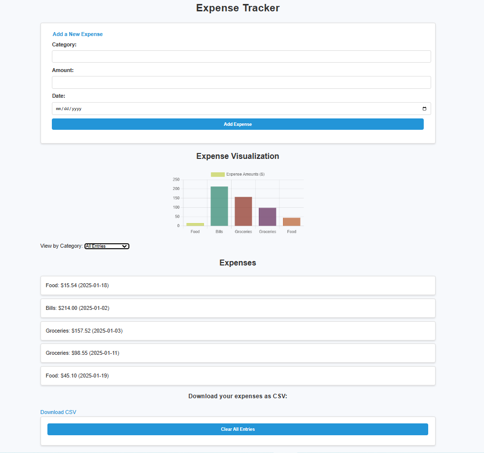

About Expense Tracker

The Expense Tracker helps you keep track of your daily expenses. It features an intuitive form for data entry and interactive visualizations to help you analyze your spending habits.
Download the App
Want to try it out? Click the link below to download the Expense Tracker repository and set it upon your local machine.
Download Expense TrackerHow to Use
Follow these steps to get started with the Expense Tracker:
- Download and extract the repository using the button above.
- Ensure you have Python installed on your system (version 3.7 or higher).
- Install the required dependencies by running
pip install -r requirements.txtin the extracted folder. - Start the application by running
python app.py. - Open your browser and navigate to http://127.0.0.1:5000/.
- Add your expenses, view visualizations, and track your spending habits!